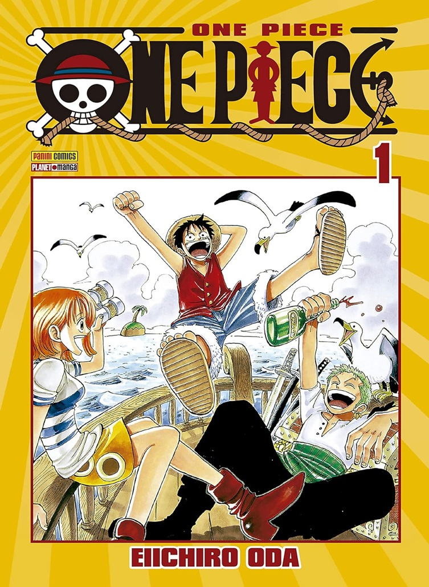

Apesar do estudante colegial Yuuji Itadori ter grande força física, ele se inscreve no Clube de Ocultismo.
Certo dia, eles encontram um "objeto amaldiçoado" e retiram o selo, atraindo criaturas chamadas de "maldições".
Itadori corre em socorro de seus colegas, mas será que ele será capaz de abater essas criaturas usando apenas a força física?!
Na compra da primeira edição de Jujutsu ganhe de brinde um Poster Exclusivo
Por Gege Akutami(autor, ilustrador)
R$9,99
Demon Slayer - Kimetsu No Yaiba Vol. 1
O dia-a-dia pacato de Tanjiro, um gentil garoto que vende carvão, se transforma radicalmente quando sua família é assassinada por um demônio.
A única sobrevivente é Nezuko, sua irmã mais nova. Porém, agora, ela se transformou em um Oni.
Diante dessa tragédia, os dois irmãos partem em uma jornada para derrotar o Oni que matou sua mãe e irmãozinhos.
E assim tem início uma aventura sanguinolenta de espadachins!
Por Koyoharu Gotouge (Autor, Ilustrador)
R$9,99
Haikyu! Vol. 01
Shoyo Hinata e Tobio Kageyama, dois garotos fascinados pelo vôlei.
A diferença é que Kageyama é um levantador talentoso, e Hinata, um atacante de baixa estatura para um jogador.
Os dois se encontram durante a primeira rodada daetapa de classificação para o torneio Nacional, e acabam se tornando grande rivais.
Por coincidência do destino, eles terão que unir forças para entrar no clube de vôlei do colégio Karasuno e manter o sonho de continuar jogando vôlei.
Por Haruichi Furudate (Autor)
R$14,99
Noragami Vol. 1
Conheça Yato, um rapaz de agasalho e sem-teto que se autodenomina um deus.
Apesar de sua personalidade um tanto quanto indelicada e temperamental, por uma pequena quantia ele se dispõe a realizar os desejos daqueles que estão com problemas,
fazendo o que sabe fazer de melhor: “cortar” qualquer coisa que habite este ou o outro mundo, assim como o limiar entre os dois!!
Por Adachitoka (Autor)
R$9,99

One Piece - vol. 1
Luffy é um garoto que deseja tornar-se um pirata por causa do Shanks.
Durante uma discussão com Shanks por causa de alguns bandidos das montanhas, o garoto acaba comendo a Gomu Gomu no Mi.
Mais tarde, porém, os bandidos retornam e Luffy decide comprar briga com eles bem quando os piratas não estão lá para protegê-lo.
Shanks salva Luffy, mas acaba perdendo seu braço esquerdo por conta disso e logo deixa seu chapéu com o garoto.
Por Eiichiro Oda (Autor)
R$19,99
Dragon Ball Vol. 1
Son Goku é um pequeno órfão de coração puro, mas com uma tremenda força.
Depois de viver tanto tempo isolado da civilização, ele recebe a inesperada visita de uma garota!
Bulma lhe propõe uma parceria para buscar as sete Esferas do Dragão, que, quando reunidas, são capazes de realizar qualquer desejo!
Perigos e adversários não faltarão no caminho dessa dupla inusitada, e os mais variados personagens marcarão presença nesta aventura cheia de humor!
Por Akira Toriyama (Autor)
R$9,99
Chainsaw Man Vol. 1
Denji é um jovem extremamente pobre que junto de Pochita, seu demônio de estimação,
trabalha feito um condenado como Caçador de Demônios para pagar a imensa dívida que possui.
Mas sua vida de miséria está prestes a mudar graças a uma traição brutal!!
Aqui começa a história de um novo anti-herói que com um demônio em seu corpo, caça demônios!!
Por Tatsuki Fujimoto (Autor, Ilustrador)
R$14,99
Contos de Horror da Mimi (Edição Completa)
O par fantasmagórico perfeito para quem amou a cultuada obra Fragmentos do Horror
Assim como em Fragmentos do Horror, Junji Ito transpõe de forma magistral para
os mangás os relatos de eventos misteriosos e sobrenaturais de Shin Mimibukuro,
dando continuidade ao legado de tradição milenar dos kaidan,
os contos de horror e de fantasmas.
Por Junji Ito (Autor), Hirokatsu Kihara (Autor), Ichiro Nakayama (Autor)
Jéssica Ilha da Silva (Tradutor)
R$49,99
Tokyo Revengers - Vol. 01
Tokyo Revengers gira em torno de Takemichi Hanagaki, um jovem de 26 anos mal sucedido na vida, profissionalmente e em relações amorosas.
Vive com problemas financeiros e ainda descobre que sua ex-namorada foi assassinada por uma gangue de Tóquio.
A notícia mexe bastante com Takemichi e, ao entrar numa estação de metrô, ele é empurrado nos trilhos e quando estava prestes a ser atropelado algo surpreendente acontece:
Takemichi viaja 12 anos no passado, para sua época de escola. É a chance dele consertar o passado para mudar o futuro!
Por Ken Wakui (Autor)
R$29,99
Given - Volume 01
Ritsuka Uenoyama é um guitarrista colegial com talentos de sobra, que por acaso conheceu Mafuyu Sato quando este o pede para trocar as cordas.
Na mesma ocasião, Mafuyu pede para que Ritsuka o ensine a tocar guitarra, porém, o guitarrista não gostou muito da ideia.
No entanto, ele se vê obrigado a mudar de opinião assim que ouve o canto estonteante de Mafuyu, a ponto de convidá-lo a fazer parte de sua banda.
Por Natsuki Kizu (Autor)
R$9,99
Death Note - Black Edition - Volume 1
Sem nada de interessante para fazer no Mundo dos Shinigamis, o Deus da Morte Ryuk deixa cair intencionalmente na Terra o seu Death Note.
O caderno possui poderes macabros: a pessoa que tem seu nome escrito nele, morre! O Death Note acaba indo parar na mão de Light Yagami.
Aluno exemplar, porém entediado, ao descobrir os sinistros poderes do caderno negro, decide virar um justiceiro e varrer a criminalidade da face da Terra.
Por Tsugumi Ohba (Autor), Takeshi Obata (Autor)
R$39,99
Hunter X Hunter - Vol. 1
Gon Freecss é um garoto de 12 anos que pretende se tornar um Hunter, caçador de tesouros, lugares perdidos e criaturas estranhas.
Só que para isso, ele precisa passar por rigoroso exame para obter uma licença especial.
Por Yoshihiro Togashi (Autor)
R$59,99
Hanako-kun e os Mistérios do Colégio Kamome Vol. 1
Um boato sobre os sete mistérios se espalha pelo Colégio Kamome. Dizem que, na terceira cabine do banheiro feminino do terceiro andar do prédio velho,
é possível encontrar "Hanako-san", que realizará qualquer pedido de quem for ao seu encontro. Para ver seu desejo se tornar realidade,
Nene Yashiro recorre à lenda urbana da escola.